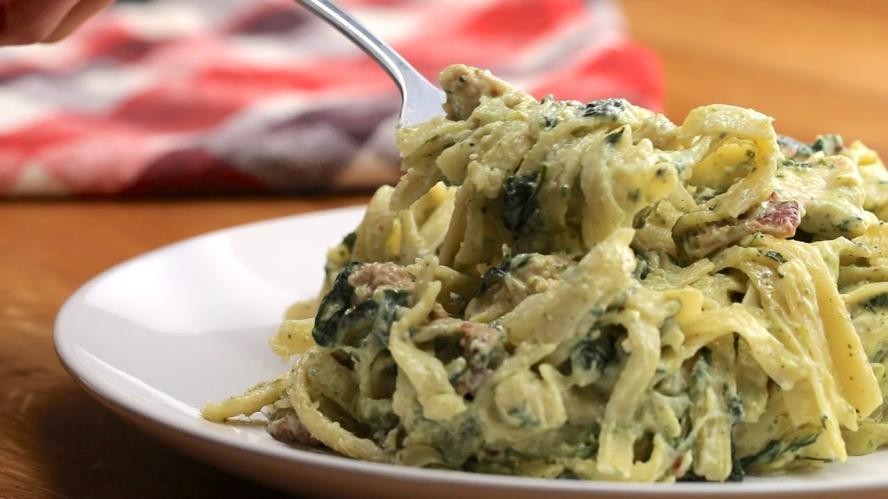

Home
Bacon Pesto Pasta

Description
You’ve heard of chicken or tuna pesto pasta, but what if you're craving for pesto but don't have both? This is how I discovered bacon pesto pasta.
Turns out, bacon works surprisingly well. Its crispy texture and smoky, salty flavor give the pasta a deeper, more savory edge. Paired with the fresh, herby taste of pesto, it’s a quick fix that doesn’t feel like a compromise—just a solid, flavorful combo that came out of nowhere and now I keep coming back to.
Ingredients
- Chopped Bacon (amount is to your liking)
- 6 cloves garlic
- Butter (adjust to your liking)
- 180g Clara Ole Cheesy Pesto Sauce
- 250mL All Purpose Cream
- Salt and Pepper
- Cheese (optional)
- 250g Pasta(I used spaghetti for this)
Steps
- Cook your pasta according to package instructions.
- Mince your garlic and set them aside.
- In a pan, cook your bacon depending on how crispy you want it to be. Then, remove some of the rendered fat so it won't be too oily.
- Add butter to the pan and let it melt.
- Add the minced garlic and sauté until fragrant.
- Pour in the Clara Ole Cheesy Pesto Sauce and stir well.
- Pour in the All Purpose Cream and mix until well combined.
- Remember to season the sauce with salt and pepper to taste.
- Add the cooked pasta in the sauce and mix until it is fully incorporated to the sauce.
- Serve hot and top with cheese if desired.